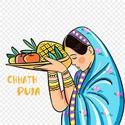
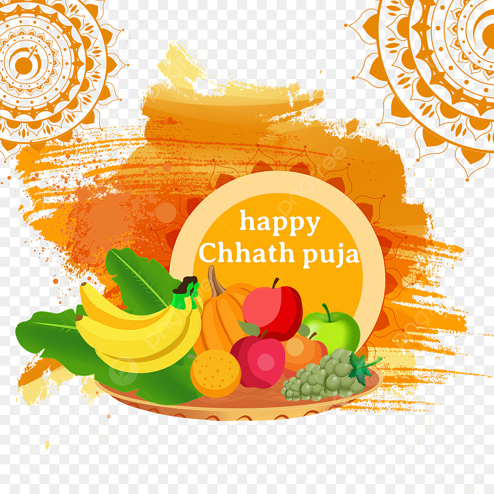
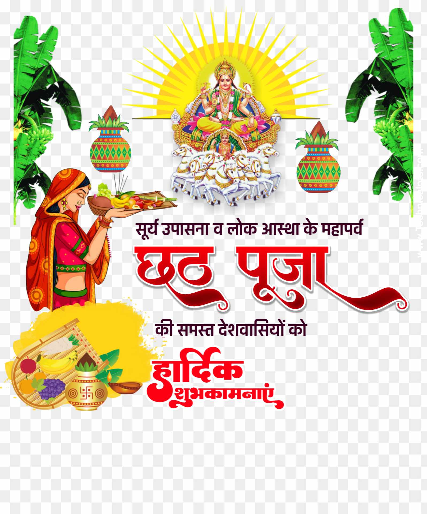
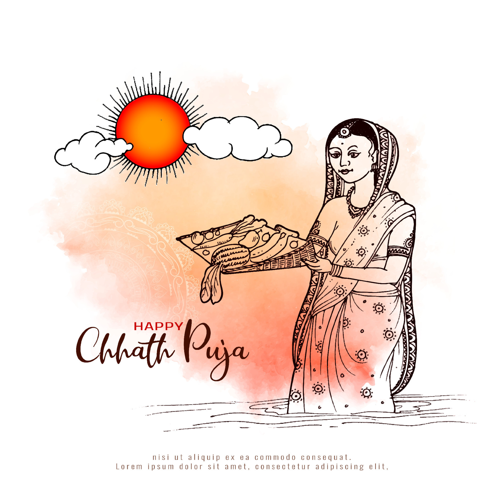

छठ पूजा का महत्व
छठ पूजा भारत में, खासकर बिहार, उत्तर प्रदेश और नेपाल के कुछ हिस्सों में मनाया जाने वाला एक महत्वपूर्ण पर्व है। यह पर्व सूर्य देव (सूर्य भगवान) को समर्पित होता है और इसे श्रद्धा और धैर्य के साथ मनाया जाता है। यह पर्व प्रकृति और सूर्य के शक्तियों का उत्सव है, जो जीवन और पर्यावरण के महत्व को दर्शाता है।
इस पूजा के दौरान उपवास, प्रार्थनाएँ और सूर्य देव को धन्यवाद देने के अनुष्ठान किए जाते हैं। लोग नदियों, झीलों और अन्य जलस्रोतों के पास एकत्र होते हैं, जहां वे प्राचीन रीति-रिवाजों का पालन करते हुए सूर्य देव को अर्घ्य अर्पित करते हैं।
यह एक ऐसा समय होता है जब परिवार एकजुट होते हैं, अपने विश्वास को नवीनीकरण करते हैं और जीवन के आशीर्वाद के लिए धन्यवाद अर्पित करते हैं।

दिन 1: नहाय-खाय
छठ पूजा का पहला दिन "नहाय-खाय" के नाम से जाना जाता है। इस दिन, भक्तगण पवित्र स्नान करते हैं, अपने शरीर को साफ करते हैं और अगले दिनों के लिए तैयार होते हैं। इस दिन विशेष रूप से शुद्ध भोजन तैयार किया जाता है।

दिन 2: लोहंडा और खरना
दूसरे दिन को "खरना" के नाम से जाना जाता है। इस दिन उपवासी पूरे दिन उपवासी रहते हैं और शाम को खीर और रोटी का प्रसाद सूर्य देव को अर्पित करते हैं। यह दिन विशेष रूप से सूर्य देव से आशीर्वाद प्राप्त करने का दिन होता है।

दिन 3: संध्या अर्घ्य
तीसरे दिन सूर्यास्त के समय सूर्य देव को अर्घ्य अर्पित किया जाता है। भक्तगण नदी या तालाब के किनारे एकत्र होते हैं और संपूर्ण श्रद्धा के साथ सूर्य देव को जल अर्पित करते हैं। यह दिन पूजा का सबसे महत्वपूर्ण दिन होता है।

दिन 4: उषा अर्घ्य
छठ पूजा का अंतिम दिन उषा अर्घ्य का होता है, जिसमें सूर्य देव को उगते हुए अर्घ्य अर्पित किया जाता है। इस दिन भक्तगण सूर्य से आशीर्वाद प्राप्त करते हैं और उपवासी अपना उपवास समाप्त करते हैं।